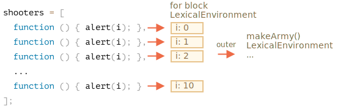

让我们检查一下 makeArmy 内部做了什么，那么答案就显而易见了。
它创建了一个空数组 shooters：
let shooters = [];在循环中，通过 shooters.push(function...) 填充它（数组）。
每个元素都是函数，所以数组看起来是这样的：
shooters = [
function () { alert(i); },
function () { alert(i); },
function () { alert(i); },
function () { alert(i); },
function () { alert(i); },
function () { alert(i); },
function () { alert(i); },
function () { alert(i); },
function () { alert(i); },
function () { alert(i); }
];该数组返回自函数。
随后，army[5]() 从数组中获得元素 army[5]（函数）并调用。
为什么现在所有函数显示的都一样呢？
这是因为 shooter 函数内没有局部变量 i。当调用一个这样的函数时，i 是来自于外部词法环境的。
i 的值是什么呢？
如果我们查看一下源头：
function makeArmy() {
...
let i = 0;
while (i < 10) {
let shooter = function() { // shooter 函数
alert( i ); // 应该显示它自己的编号
};
...
}
...
}……我们可以看到它存在于当前 makeArmy() 运行相关的词法环境中。但调用 army[5]() 时，makeArmy 已经完运行完了，i 现在为结束时的值：10（while 结束时）。
因此，所有的 shooter 获得的都是外部词法环境中的同一个值，即最后的 i=10。
我们可以通过将变量定义移动到循环中来修复它：
function makeArmy() {
let shooters = [];
for(let i = 0; i < 10; i++) {
let shooter = function() { // shooter 函数
alert( i ); // 应该显示它自己的编号
};
shooters.push(shooter);
}
return shooters;
}
let army = makeArmy();
army[0](); // 0
army[5](); // 5现在正常工作了，因为每次执行代码块 for (let i=0...) {...} 中的代码时，都会为其创建一个新的词法环境，其中具有对应的 i 值。
所以，现在 i 值的位置更近了（译注：指转到了更内部的词法环境）。现在它不是在 makeArmy() 的词法环境中，而是在与当前循环迭代相对应的词法环境中。这就是它为什么现在可以正常工作了。

这里我们把 while 改写为了 for。
其他技巧也是可以的，让我们了解一下，以便更好地理解这个问题：
function makeArmy() {
let shooters = [];
let i = 0;
while (i < 10) {
let j = i;
let shooter = function() { // shooter 函数
alert( j ); // 应该显示当前的编号
};
shooters.push(shooter);
i++;
}
return shooters;
}
let army = makeArmy();
army[0](); // 0
army[5](); // 5while 和 for 循环差不多，每次运行都会创建了一个新的词法环境。所以在这里我们能确保 shooter 能够获取正确的值。
我们复制 let j = i。这个操作创建了循环体局部变量 j，并将 i 的值复制给了它。原始值是按值传递的，所以实际上，我们获得了属于当前循环迭代的完全独立的 i 的副本。